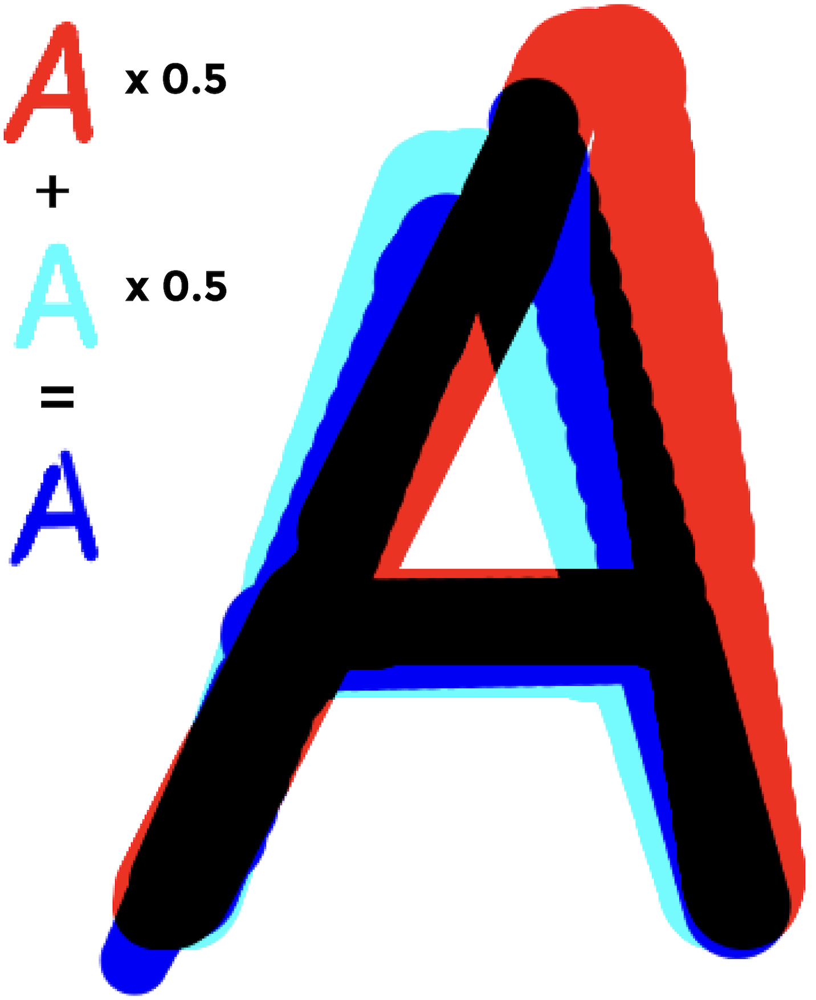
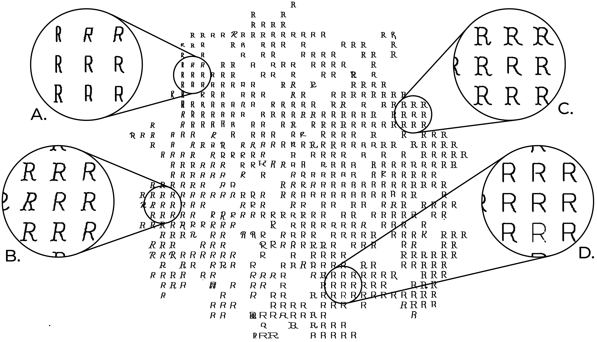
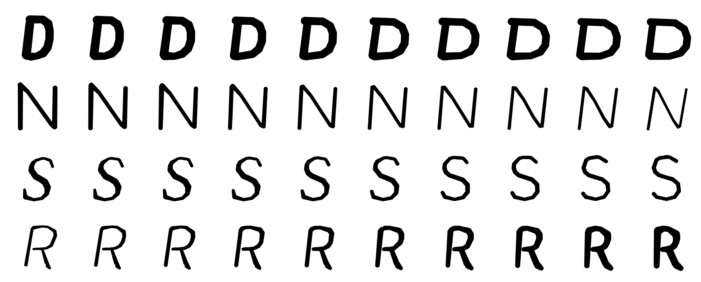

1. INTRODUCTION
The design of type has undergone numerous changes over time [4]. In the early years,
typography
was
seen as a system made up of a series of rules. The artistic movements that arrived at
the
beginning
of the twentieth century rejected the historical forms and transformed outdated aspects
of
visual
language and expression. However, projects that combined software, arts and design only
appeared
a
few years later with the proliferation of personal computers, allowing programming to
reach
a
wider
audience. Thanks to all these changes, the tools to design type changed, and new
possibilities
for
typographic experimentation appeared, resulting in (i) grammar-based techniques that
explore
the
principle of database amplification (e.g. [2]); (ii) evolutionary systems that breed
design
solutions under the direction of a designer (e.g. [22, 15]); (iii) or even, Machine
Learning
(ML)
systems that learn the glyphs features to build new ones (e.g. [14]) [18]. These
computational
approaches can also be helpful as a starting point of inspiration.

Fig. 1. Interpolation of the skeleton and stroke width from two existing A’s
(light
blue
and red) resulting in a new A (dark blue)
...
Most emerging fonts continue to be developed by type designers who study the shape
of
each
letter
and its design with great precision, despite the emergence of these new
possibilities.
Type
design
is a hugely complex discipline, and its expertise ensures typography quality [28].
Moreover,
with
the proliferation of web typography and online reading, the use of variable and
dynamic
fonts
has
increased, allowing more options for font designers and font users. Additionally,
visual
identities
created nowadays are becoming more dynamic [17]. Museums, institutions,
organisations,
events
and
media increasingly rely on this type of identity. Consequently, designers should
adapt
their
work to
these new possibilities by creating dynamic identities with animations and
mutations.
Even
though
new computer systems create expressive and out-of-the-box results, they do not have
the
knowledge of
an expert. But this is also an advantage, allowing non-arbitrary exploitation that
extends
the
range
of possibilities. It is necessary to create a balance to take advantage of the
computational
systems
and the expert labour. Moreover, most generative systems that design type focus on
the
letters’
filling and don’t see the structure of a glyph as a variation parameter.
To overcome these limitations, we propose an Autoregressive model [9] that creates
new
glyph
skeletons by the interpolation of existing ones. Our skeleton-based approach uses
glyphs
skeletons
of existing fonts as input to ensure the quality of the generated results. The
division
of
the
structure and the filling of the glyphs add variability to the results. Different
glyphs
can
be
created by just changing the structure or the filling.
The proposed approach enables the exploration of a continuous range of font styles
by
navigating
on
the Autoencoder (AE) learnt latent space. With the results of this approach, it is
also
possible
to
apply different filling methods that use the stroke width of the original letters to
produce
new
glyphs.
Read more
2. RELATED WORK
Over time, the methods and technologies available for type design have improved and
designers have
to evolve and adapt their process of thinking in accordance. Generative Adversarial
Networks
(GANs)
have revealed impressive advances, presenting high-resolution images nearly
indistinguishable from
the real ones. In the typographic field, they are helpful when one wishes to obtain
coherent
glyphs
in a typeface. When designing a typeface, one has to simultaneously seek an
aesthetically
appealing
result and coherence among the different glyphs. This can be facilitated by
exploring
the
similarities between the same letter present across diverse fonts, and the
transferred
stylistic
elements within the same font [5]. Balashova et al. [2] develop a stroke-based
geometric
model for
glyphs, a fitting procedure to re-parametrise arbitrary fonts to capture these
correlations.
The
framework uses a manifold learning technique that allows for interactively improving
the
fit
quality
and interpolating, adding or removing stylistic elements in existing fonts. Campbell
and
Kautz [3]
develop a similar contour-based framework allowing the editing of a glyph and the
propagation of
stylistic elements across the entire alphabet. Phan et al. [19] and Suveeranont and
Igarashi
[26]
present two different frameworks that give one or more outline-based glyphs of
several
characters as
input, producing a complete typeface that bears a similar style to the inputs.
Rehling
and
Hofstadter [21] use one or more grid-based lowercase letters to generate the rest of
the
Roman
alphabet, creating glyphs that share different style features. Azadi et al. [1]
develop
an
end-to-end stacked conditional GAN model to generate a set of highly-stylised glyph
images
following
a consistent style from very few examples.
We can also imitate the behaviour of a variable font using Recurrent Neural Networks
(RNNs)
and
interpolate to obtain intermediate results. Lopes et al. [14] model the drawing
process of
fonts
by
building sequential generative models of vector graphics. Their model provides a
scale-invariant
representation of imagery. The latent representation may be systematically exploited
to
achieve
style propagation. Shamir and Rappoport [24] present a parametric feature-based font
design
approach. The development of a visual design system and the use of constraints for
preserving
the
designer’s intentions create a more natural environment in which high-level
parametric
behaviours
can be defined. By changing the glyph parameters they create several family
instances. Also,
outside
the typographic field, there are some good examples exploring the latent space.
Sketch-RNN
[7]
is an
RNN able to construct stroke-based drawings. The network produces sketches of common
objects
in
a
vector format and explores the latent space interpolation of various vector images.
There is
also
increased attention to these networks and their application to facilitate the use
and
combination of
fonts. A usual way to combine different fonts is by using fonts from the same family
or
created
by
the same designer. Another way is to find fonts that match x-height and
ascenders/descenders.
Fontjoy [20] is another tool to facilitate the process of mixing and matching
typefaces and
choosing
fonts to use side by side. FontMap [8] and Font-VAE [10] are tools developed with
the goal
of
discovering alternative fonts with the same aesthetics.
...Read more
3. APPROACH
In this section, we present the developed model that generates new letter skeletons by
interpolating
existing ones. ... This process allows us to control the style of the resulting
font by
navigating
the
latent space. We explain all the steps taken, from the data collection and editing,
passing
through
the development of the network architecture until the experimentation and analysis
of the
results.
Read more
Fig. 2. Diagram of the architecture of our approach.
3.1. Data
One of the most important aspects of our approach is the collection and pre-processing
of the
dataset. ...We
compile a collection of fonts in TTF font format with different weights from
Google
Fonts [6]. This dataset is composed of five different font styles, Serif, Sans Serif,
Display,
Handwriting and Monospace. We opted not to use handwriting and display fonts because
they were
largely distinct from the rest, which is not desirable for our approach. Their
ornamental
component,
sometimes not even filled, complicates the extraction of a representative skeleton. We
only
worked
with 26 characters (A-Z) of the Latin alphabet in their capital format. We believed
that, as a
work
in progress, it would be best to create a dataset with a few characters. By just using
capital
letters, we are reducing the complexity of the approach.
After selecting the fonts, we remained with 2623 TTF files. Then, we use the library
Skelefont
[16]
to extract the skeleton of a font file. It applies the Zhang-Suen Thinning Algorithm
[29] to
derive
the structural lines of a binary image. This library also allows the extraction of the
points of
the
skeletons as well as the connections between them. It can also calculate the distance
between
the
points and their closest borderline pixel, returning the stroke width of the original
glyph at
each
of these points.
For each font, we rasterise the vectors that compose the skeleton of each glyph into
a
64x64px
black
and white image. We also save all points’ positions and stroke width of the original
glyph in a
file
to use later to generate the filling of the glyphs. Then, we repeat the process for
the
26
letters
of the alphabet (capital letters of the Latin alphabet only). This process is shown
in
the first
three images of the diagram.
Read more
 Fig. 3. Comparison between the originals (left) and the reconstructed skeletons (right).
Fig. 3. Comparison between the originals (left) and the reconstructed skeletons (right).
3.2. Network Architecture
The proposed model consists of a Conditional Variational Autoencoder (VAE) [11] and an
Autoregressive
sketch decoder. ...We used a VAE instead of a regular AE to allow us to manipulate
the
latent
vectors
more easily. The output of the VAE are the parameters of distribution instead of vectors
in the
latent space. Moreover, the VAE imposes a constraint on this latent distribution forcing
it to
be a
normal distribution which makes sure that the latent space is regularised. Therefore, we
can
create
smoother transitions between different fonts when we sample the latent space moving from
one
cluster
to the other. The Conditional part of the model allows us to input which letter we are
encoding
and
decoding allowing us to manipulate better which letter we are creating.
Finally, as
all
the
letters
share the same latent space we can also explore the skeletons between different
letters.
Figure 2 shows a diagram of the architecture used. In summary, the encoder employs a
Convolutional
Neural Network (CNN) that processes the greyscale images and encodes them into two 64-D
latent
vectors which consist of a set of means (μ) and standard deviations (σ) of a Gaussian
representation. Through experimentation, we found that size 64 for the latent code
presents the
best
results for our approach as it is a good trade-off, allowing us to compress all the
characteristics
of the letter while keeping its tractability. Then, using the mean and standard
deviation we
take a
sample from the Gaussian representation z to be used as input for both decoders, the
image
decoder
and the sketch decoder. The image decoder consists of a set of convolutional transpose
layers
that
receive the z vector and decodes it into a greyscale image which is compared with the
original
input.
The sketch decoder consists of an LSTM [9]
with dropout [25, 23] that transforms
the z
vector
into a sequence of 30 points creating a single continuous path. This path is rasterised
using a
differentiable vector graphics library [13] to produce an output image. This library
allows
converting vector data to a raster representation while facilitating backpropagation
between the
two
domains. In the rasterisation process, we take the sequence of 30 x and y values and
transform
them
to canvas coordinates. Then, we create a line that connects all points following the
same order
they
are returned from the sketch decoder. The width of this path needs to be carefully
selected to
match
the width of the original skeleton. If the width of the path is thinner than in the
original
images,
at some part of the training process, the network stops trying to compose the whole
letter and
starts to fill the width of the letter in a zig-zag manner. However, if the line is
thicker than
in
the original images we lose detail in the final skeleton.
Finally, we render the produced path in a canvas as a greyscale image that is compared
with the
original image. Although the standard VAE works at the pixel level, the output of our
sketch
decoder
is a sequence of points, thus allow- ing the generation of scalable vector graphics that
allow
easier manipulation of the generated skeletons without losing quality. The loss value is
calculated
in a similar way as in the standard VAEs. We calculate the Binary Cross Entropy between
the
output
images of the image decoder and the original inputs. We also calculate the
Kullback-Leibler
Divergence [12] to allow a regularised distribution of the latent space.
Finally, we
compute the
Binary Cross Entropy between the original inputs and the output of the sketch decoder.
To obtain
the
final loss value we add the three values together.
Read more
4. RESULTS
The VAE and sketch decoder trained for 50 epochs with a learning rate of 0.001 and a
batch
size
of
256. ...As
mentioned before, we use 2623 64 × 64px black and white images of skeletons for
each
capital
letter of the Latin alphabet, so our dataset is constituted of 68 198 images.
Read more
4.1. Reconstruction of Skeletons
As mentioned before, the model returns a sequence of points that, when connected, create a
reconstruction of the skeleton image used as input. ...In most cases, the generated strokes
reconstruct
the basic features of the skeleton. For example, in the case of the letter “A”, the
network
first
creates one stem, then the crossbar connects both stems and finally draws the second
stem.
Even
though there is nothing to control the distance between points or to enforce them to be
close,
the
network learns that it needs to connect both stems at the beginning and the end of the
sequence.
Another interesting feature observable in the reconstruction is related to how the ANN
handles
the
letter “T”. This letter presents one of the simplest skeletons of the alphabet, so the
network
can
learn how to generate the whole structure of the letter very quickly in comparison with
others.
Figure 3 presents a comparison between the original inputs and the reconstructed
skeletons
using
a
single stroke. The reconstructions of “C”, “L” or “K”, for example, are very similar.
The
letters
“A”, “X” and “K” present a more complex challenge to the network as it needs to create a
path
that
overlaps itself to draw the whole letter structure with only one line. Sometimes, the
serif
is
lost
in the reconstruction due to the same issue. The line must overlap itself multiple times
to
create
the small parts without messing with the overall structure of the letter. But the other
reason
for
this could be that the number of letters with serif is lower than the number of letters
without
it.
In summary, even though the small details of the letters might be lost, our network is
able
to
create the minimal structure of the letter, generating skeletons that cannot be confused
with
any
other letter.Read more
4.2. Latent Representation of Font Style
To understand if the trained model can learn a latent representation for the different
letters
that
is smooth and interpretable, we need to visualise the 64-dimensional z vectors for the
dataset. ...
So
we take all the images of the dataset (68198 images) and encode them using our network.
Then,
using
the means and standard deviations of each encoded image we took a sample from the
distribution.
Finally, we took all the z vectors and reduced their dimensionality using the t-SNE
algorithm
[27].
This allows us to reduce the z vectors from a size of 64 to two dimensions which can be
translated
to positions in a two-dimensional domain. For each position of a two-dimensional grid,
we
place
the
image of the best candidate. We select this candidate by finding the two-dimensional
encoding
closest to that position.
Figure 4 presents the visualisation of the
results. In general,
the
model
can separate the different letters into clusters. In some cases, it is also possible to
observe
that
similar letters are placed near each other, for example in the case of the letters “B”,
“R”
and
“P”.
These three letters present similar anatomical characteristics, they share a top bowl
and
they
all
have a vertical stem, thus they are placed near each other. The same happens for the
letters
“T”
and
“I” which are placed more separately from the rest but near each other. Even though the
majority
of
the skeletons for the letter “I” is represented with a single stem, in some cases, when
they
have
serif, they are similar to the letter “T” but with a cross stroke on the top and bottom
part
of
the
letter. This leads to both letters having a strong similarity between each other,
therefore
they
are
placed together in the latent space.
We also create a similar representation contemplating the skeleton images of a single
letter
(2623
images). To understand if the trained model was able to smoothly change styles within
the
same
letter we created a similar visualisation as in Figure 4. Figure 5 presents the
visualisation of
the
results for the letter “R”. As it is possible to observe, the model is able to separate
the
different font weights across the latent space, creating different regions. The zoom-in
boxes
show
four separate locations where we notice a concentration of specific font styles. In (A)
it
is
presented a region where the condensed fonts are, while the opposite corner (D)
represents
the
most
extended fonts. It is also possible to observe that (B) represents the italic, and
finally
(C)
presents most of the fonts with serifs. Local changes within these regions are also
visible,
where
the font width increases when distancing from the region (A) and approximating to the
region
(D). It
is also possible to observe a slight increase in the font height in the top-bottom
direction.Read more
 Fig. 4. t-SNE visualisation of the learned latent space z for all the capital
letters of the Latin alphabet.
Fig. 4. t-SNE visualisation of the learned latent space z for all the capital
letters of the Latin alphabet.

Fig. 5. t-SNE visualisation of the learned latent space z for a single letter.
4.3. Exploring the Latent Space
After analysing whether the latent space translates font characteristics for meaningful
latent
representation, we explore linear interpolations between pairs of skeletons for a given
glyph. ...
First, we encode two randomly selected fonts from the dataset into their corresponding z
vectors.
Then, we perform a linear interpolation between the two vectors and, using the trained
sketch
decoder, we reconstruct the skeletons for these vectors. Figure 6 shows some results of
this
exploration. The first and last glyph of each row are the original skeletons, and in the
middle
are
the interpolations between them two. The interpolation percentage starts at 0% and ends
at
100%,
which means that the second skeleton is a reconstruction of the glyph on the left side,
and
the
penultimate skeleton is a reconstruction of the glyph on the right.
The results show that the model is not only able to decode meaningful skeletons but it
is
also
able
to control several characteristics of it. In the example of the letter “N”, not only the
model
can
control the width of the letter, but it also controls its height. As it is possible to
observe in the interpolations presented in Figure 6, not only the model
is
able
to decode meaningful skeletons but it is able to control several characteristics of it.
In
the
example of the letter “H”, the width of the letter is slightly changed until it matches
the
width of
each skeleton input image. In the case of the letter “N”, not only the model is able to
control
the
width of the letter, but it also controls its height.
 Fig. 6. Results of the latent space interpolation between different skeletons of
the same letter. An example video of multiple interpolations can be found at
https://imgur. com/a/qf1m2Da.
Fig. 6. Results of the latent space interpolation between different skeletons of
the same letter. An example video of multiple interpolations can be found at
https://imgur. com/a/qf1m2Da.
At the same time the width of the
letter
changes, its height is also modified to match its parents, which allows wider control
over
the
skeleton that can be created. In the case of the letter “T”, it is possible to observe
that
the
model can also control how much the letter is italic.
As we go from the left input skeleton
image to
the right, the stem of the letter gets closer to a vertical position. This not only
shows
that
the
model is capable of perceiving different angles but it can also transition between them
gradually.
Therefore, we might be able to control all these stylisations of the skeletons by
navigating
the
latent space. This can be observed in the visualisation shown in Figure 5. There are
certain
regions
dedicated to different letter styles. So, we can navigate this space in order to create
fonts
that
demonstrate a set of desired styles.
We also interpolate between skeletons of different letters. By observing the
resulting
skeletons
present in Figure 7, we observe that the model is able to pass from one skeleton to
another
from
different letters. Sometimes the morphings are not even expected to be smooth,
because some
letters
have anatomical parts completely different, like for instance the “Z” and “T”. The
generated
skeleton starts as “Z” but over time it loses its bottom crossstroke. Moreover, its
diagonal
stroke
slightly changes its angle and transforms itself into the stem of a “T”. There are
also
other
transformations that are expected, such as the case of “P” and “F”, which share a
stem. Over
the
line, the generated skeleton opens its bowl to create the arms of the “F” and at the
same
time
slightly inclines the stem to create an italic glyph according to the inclination of
the
“F”.
Another information that we can obtain is that sometimes we start to visualise
intermediate
skeletons that look like other existing letter’s skeletons. For example, when we
explore the
latent
space between “G” and “L” in some intermediary steps we can observe some resemblance
with
the
letter
“C”.
Read more
 Fig. 7. Results of the latent space interpolation between skeletons of different
letters.
Fig. 7. Results of the latent space interpolation between skeletons of different
letters.
4.4. Transforming Skeletons into Glyphs
So far, we have demonstrated how our system is able to reconstruct and create new skeletons
through
the exploration of latent space. ... However, our goal is to develop a tool to support the
design
process by allowing the creation of artificial variable fonts or morphing fonts, so it
is
imperative
to test the application of the generated skeletons.

Fig. 8. Results of the latent space interpolation filling the skeleton with an
interpolated stroke width.
As mentioned before, the skeleton extraction library [16] allows, in addition to
extracting
the
points, obtaining the stroke width at each point of the skeleton. When we created the
dataset,
by
extracting the skeletons of the uppercase letters of the Latin alphabet for each font
file
that
we
selected, we saved the points of each skeleton and its stroke width to use posteriorly.
With
these
values, we were able to interpolate the stroke width along with the generated skeleton.
The
process
of filling the generated skeletons is the following. First, we randomly choose two
skeletons
to
interpolate. Then, we calculate the stroke width at each point of the generated
skeletons.
To do
this, we calculate the corresponding point on the skeletons that serve as input for the
creation
of
intermediate skeletons. We do this calculation by overlapping the input skeletons and
the
generated
skeleton and calculating the closest match. The stroke width at each point is a result
of
combining
the interpolation of the widths of the input skeletons.
Figure 8 shows some results in which
each
row represents a different interpolation. Looking at the generated glyphs, we can see
that
they
look
similar to a regular font. With a few adjustments, we could use them as a variable font.
Now,
with
interpolated fill, the contrast between variations is more visible, because we had
another
parameter
to the glyph design. By splitting the skeleton and the filler we have more visual
possibilities
because we are not stuck with a filler. In these tests, we use filling in the original
fonts
to
fill
in the intermediate ones, but it is not mandatory. We can even use some fonts to create
the
skeleton
and others to create the filling or even use a fixed value along the skeleton. By
applying
the
filling, the interpolated glyphs become more unique, by suffering more alterations when
moving
between the two input glyphs. For example, in the “S” (Figure 8) we can observe that
besides
the
axis alteration, the glyphs also change in contrast. The generated “S” near the left is
styled
more
like a modern font, with high contrast and serifs. From left to right the contrast
inside
the
generated glyphs turns almost nil and they lost the serifs.
As mentioned before, our system provides a tool to facilitate the process of building
these
dynamic
identities with a typographic component. With this tool, designers can generate
skeletons
and
develop a filling to create their versions of glyphs. To demonstrate the application of
our
system
we made a series of experimentations with different ways of using the obtained skeletons
by
our
model (see Figure 9 and 10). In the first application (Figure 9), we present the
interpolation*
between two input glyphs. The input glyphs are represented in red and light blue while
the
generated
one is in dark blue. To visualise the three superimposed glyphs, we apply the multiply
effect,
thus
obtaining another colour that represents the common parts between the generated and the
original
ones. The generated glyphs are very diverse on a visual level, enabling the design of a
dynamic
visual identity with the use of only two fonts. We believe that the mutating factor of
these
results
provides an identity that is easily placed side by side with the dynamic visual
identities
and
variable fonts that are made these days.
 Fig. 9. First example of application of the generated skeletons into glyphs to
create a typographic identity.
Fig. 9. First example of application of the generated skeletons into glyphs to
create a typographic identity.
Fig. 10. Second example of application of the generated skeletons into
glyphs to create a typographic identity
In the second application (Figure 10),
the
generated
glyphs
use just the interpolated skeletons. The stroke width is also calculated based on
the
input
glyphs.
However, the filling is further away from the traditional typographic visual aspect.
Along
the
skeleton line, we draw a series of crosswise line segments to define the width of
the
glyph’
stroke.
The density changes to accommodate the same number of line segments between each
pair of
points.
Read more
5. CONCLUSION AND DISCUSSION
Since its emergence, type design has been adapting to technological advances. ...Nowadays, most
typefaces are developed by type designers, who study the design and anatomy of each
character
with
great precision. Type design is a difficult and time-consuming process. Our approach
takes
advantage
of the knowledge present in the design of a typeface and the computational possibilities
that
ANNs
provide. We propose a VAE combined with an Autoregressive model to generate glyphs’
skeletons by
interpolating existing ones. Our contributions are the following, a sketch decoder
capable
of
(i)
reconstructing images of glyphs’ skeletons using a single stroke, (ii) controlling font
styles
by
navigating the latent space, (iii) interpolating between two skeletons to create new
ones.
By
creating interpolations between existing fonts we develop a method to help designers in
making
their
artificial variable fonts, easing the usual glyph production. We also explored a feature
of
a
skeleton extraction library, which calculates the stroke width at each point of the
letter
skeleton,
to produce a fill for the generated skeletons. By interpolating between skeletons of
different
letters we are creating new glyph forms that resemble other existing glyphs. This opens
up
new
exploration possibilities for the future. We envision that our approach can find use as
a
tool
for
graphic designers to facilitate font design. We can employ this system to generate new
skeletons,
which the designer can fill with the desired style, but also be used as inspiration seed
to
create
new glyphs.
We expect to make several future contributions. First, we want to change the
architecture of
the
sketch decoder to be able to use multiple strokes. In some cases, our approach was able
to
draw
skeleton letters that require more than one line by overlapping them. However, if the
sketch
decoder
had access to multiple strokes, this problem could be solved more easily. Finally, we
intend
to
change the input of the network so it can receive a vector version of the skeletons
instead
of a
pixel-based image. This way we can work with an end-to-end architecture focused on
vector
format
leading to better quality skeletons without any loss of information.
Read more
6. ACKNOWLEDGEMENTS
This work is partially funded by national funds through the FCT - Foundation for Science
and
Technology, I.P., within the scope of the project CISUC - UID/CEC/00326/2020 and by
European
Social
Fund, through the Regional Operational Program Centro 2020, and under the grant
SFRH/BD/148706/2019